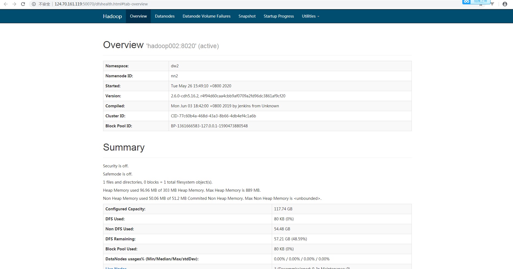
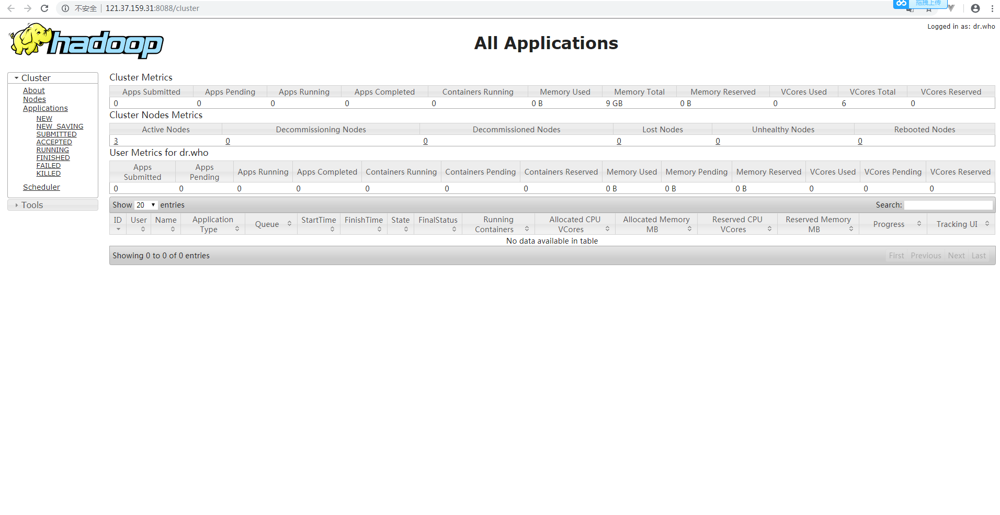
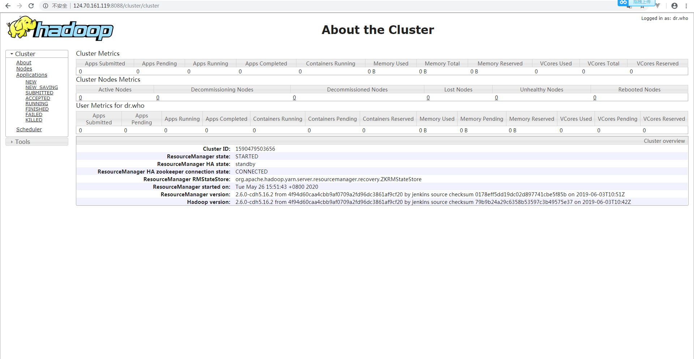

1.搭建的环境准备
- 购买3台按量付费的华为云服务器
- 配置集群的/etc/hosts文件,追加如下配置
1 | 192.168.0.155 hadoop001 |
- 配置集群的信任关系
1 | [root@hadoop001-3 ~]# useradd hadoop |
测试：
1 | ssh hadoop001 date |
2.JDK的安装(略)
3.zookeeper集群搭建
- 下载解压 zookeeper-3.4.6.tar.gz
[root@hadoop001 ~]# cd /opt/software/
[root@hadoop001 software]# wget https://www.apache.org/dist/zookeeper/zookeeper-3.4.6/zookeeper-3.4.6.tar.gz --no-check-certificate
[root@hadoop001 software]# tar -xvf zookeeper-3.4.6.tar.gz - 修改配置文件
[root@hadoop001 conf]# vi zoo.cfg- dataDir=/home/hadoop/data/zookeeper
- server.1=hadoop001:2888:3888
server.2=hadoop002:2888:3888
server.3=hadoop003:2888:3888
- 各节点添加ZK服务ID
- hadoop001: echo 1 > /home/hadoop/data/zookeeper/myid
- hadoop002: echo 2 > /home/hadoop/data/zookeeper/myid
- hadoop003: echo 3 > /home/hadoop/data/zookeeper/myid
- 启动ZK，.查看个节点ZK状态
1
2bin/zkServer.sh start
bin/zkServer.sh status
4. Hadoop集群搭建
-
下载解压 hadoopCDH5.16.2版本
-
配置文件修改
- hadoop-env.sh 显性指定java 目录
用网盘中的文件替换3台hadoop的配置文件 - hdfs-site.xml
- core-site.xml
- mapred-site.xml
- slaves
- yarn-site.xml
- hadoop-env.sh 显性指定java 目录
5. 启动集群
-
启动 zookeeper
1
2
3
4
5
6
7
8
9
10
11
12
13
14
15
16
17
18[root@hadoop001 zookeeper]# $ZOOKEEPER_HOME/bin/zkServer.sh start
[root@hadoop002 zookeeper]# $ZOOKEEPER_HOME/bin/zkServer.sh start
[root@hadoop003 zookeeper]# $ZOOKEEPER_HOME/bin/zkServer.sh start
[root@hadoop001 zookeeper]# $ZOOKEEPER_HOME/bin/zkServer.sh status
JMX enabled by default
Using config: /opt/software/zookeeper/bin/../conf/zoo.cfg
Mode: follower
[root@hadoop001 zookeeper]#
[root@hadoop002 zookeeper]# $ZOOKEEPER_HOME/bin/zkServer.sh status
JMX enabled by default
Using config: /opt/software/zookeeper/bin/../conf/zoo.cfg
Mode: leader
[root@hadoop002 zookeeper]#
[root@hadoop003 zookeeper]# $ZOOKEEPER_HOME/bin/zkServer.sh status
JMX enabled by default
Using config: /opt/software/zookeeper/bin/../conf/zoo.cfg
Mode: follower
[root@hadoop003 zookeeper]# -
启动 hadoop(HDFS+YARN)
a. 3台集群启动 JournalNode 进程1
2
3
4
5
6
7
8
9
10
11
12
13
14
15
16
17
18
19
20
21[root@hadoop001 sbin]# hadoop-daemon.sh start journalnode
starting journalnode, logging to /opt/software/hadoop/logs/hadoop-root-journalnode- hadoop001.out
[root@hadoop001 sbin]# jps
4016 Jps
3683 QuorumPeerMain
3981 JournalNode
[root@hadoop001 sbin]#
[root@hadoop002 sbin]# hadoop-daemon.sh start journalnode
starting journalnode, logging to /opt/software/hadoop/logs/hadoop-root-journalnode-hadoop002.out
[root@hadoop002 sbin]# jps
9891 Jps
9609 QuorumPeerMain
9852 JournalNode
[root@hadoop002 sbin]#
[root@hadoop003 sbin]# hadoop-daemon.sh start journalnode
starting journalnode, logging to /opt/software/hadoop/logs/hadoop-root-journalnode-hadoop003.out
[root@hadoop003 sbin]# jps
4425 JournalNode
4460 Jps
4191 QuorumPeerMain
[root@hadoop003 sbin]#b. 格式化NameNode
1
[root@hadoop001 hadoop]# hadoop namenode -format
c. 同步 NameNode 元数据
将hadoop001节点上的dfs.namenode.name.dir目录下的文件复制到hadoop002节点上1
scp -r dfs/ root@hadoop002:/opt/software/hadoop
d. 在两天namenode节点上初始化 ZFCK
1
2[root@hadoop001 bin]# hdfs zkfc -formatZK
[root@hadoop002 bin]# hdfs zkfc -formatZKe. 启动 HDFS
-
在 hadoop001 执行 start-dfs.sh
1
[root@hadoop001 sbin]# start-dfs.sh
-
单进程启动
1
2
3
4
5
6
7
8NameNode(hadoop001, hadoop002):
hadoop-daemon.sh start namenode
DataNode(hadoop001, hadoop002, hadoop003):
hadoop-daemon.sh start datanode
JournamNode(hadoop001, hadoop002, hadoop003):
hadoop-daemon.sh start journalnode
ZKFC(hadoop001, hadoop002):
hadoop-daemon.sh start zkfc
f. 验证 namenode,datanode,zkfc
-
进程
1
2
3
4
5
6
7
8
9
10
11
12
13
14
15
16
17
18
19
20
21
22
23
24[root@hadoop001 sbin]# jps
12712 Jps
12593 DFSZKFailoverController
12278 NameNode
[root@hadoop002 ~]# jps
29714 NameNode
29849 DFSZKFailoverController
30229 Jps
[root@hadoop001 ~]# jps
6348 JournalNode
8775 Jps
559 QuorumPeerMain
8509 DataNode
[root@hadoop002 ~]# jps
9430 Jps
9160 DataNode
7197 JournalNode
2073 QuorumPeerMain
[root@hadoop003 ~]# jps
11 若泽数据 www.hadoop.com
16722 JournalNode
17369 Jps
15519 QuorumPeerMain
17214 DataNode -
页面
hadoop001: http://121.37.159.31:50070/dfshealth.html#tab-overview

hadoop002: http://124.70.161.119:50070/dfshealth.html#tab-overview
g. 启动 YARN
-
集群启动
1
[root@hadoop001 hadoop]# start-yarn.sh
hadoop002 备机启动 RM
1
[root@hadoop001 hadoop]# yarn-daemon.sh start resourcemanager
-
单进程启动
1
2[root@hadoop001~002]# yarn-daemon.sh start resourcemanager
[root@hadoop001~003]# yarn-daemon.sh start nodemanager -
关闭
1
2
3[root@hadoop001 sbin]# stop-yarn.sh
#包含 namenode 的 resourcemanager 进程，datanode 的 nodemanager 进程
[root@hadoop002 sbin]# yarn-daemon.sh stop resourcemanager
h. 验证 resourcemanager,nodemanager
-
进程
1
2
3
4
5
6
7
8
9
10
11
12
13
14
15
16
17
18
19
20
21
22
23
24
25
26
27[root@hadoop001 ~]# jps
9955 NameNode
5043 NodeManager
3683 QuorumPeerMain
4679 DFSZKFailoverController
5355 Jps
4348 DataNode
3981 JournalNode
4943 ResourceManager
[root@hadoop001 ~]#
[root@hadoop002 ~]# jps
10561 ResourceManager
9955 NameNode
10021 DataNode
10183 DFSZKFailoverController
9609 QuorumPeerMain
10619 Jps
9852 JournalNode
10429 NodeManager
[root@hadoop002 ~]#
[root@hadoop003 ~]# jps
13 若泽数据 www.hadoop.com
4518 DataNode
4679 NodeManager
4425 JournalNode
4794 Jps
4191 QuorumPeerMain -
页面
ResourceManger（Active）：http://121.37.159.31:8088/cluster

ResourceManger（Standby）：http://124.70.161.119:8088/cluster/cluster

-
6. 关闭集群
- 关闭 Hadoop(YARN–>HDFS)
1 | [root@hadoop001 sbin]# stop-yarn.sh |
- 关闭 Zookeeper
1 | [root@hadoop001 bin]# zkServer.sh stop |
7. 再次启动集群
- 启动 Zookeeper
1 | [root@hadoop001 bin]# zkServer.sh start |
- 启动 Hadoop(HDFS–>YARN)
1 | [root@hadoop001 sbin]# start-dfs.sh |
8. 监控集群
1 | [root@hadoop001 ~]# hdfs dfsadmin -report |
- HDFS:http://121.37.159.31:50070/dfshealth.html#tab-overview
- HDFS:http://124.70.161.119:50070/dfshealth.html#tab-overview
- ResourceManger（Active）：http://121.37.159.31:8088/cluster
- ResourceManger（Standby）：http://124.70.161.119:8088/cluster/cluster
- JobHistory:http://121.37.159.31:50070:19888/jobhistory